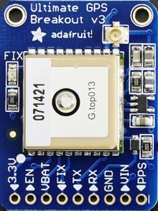
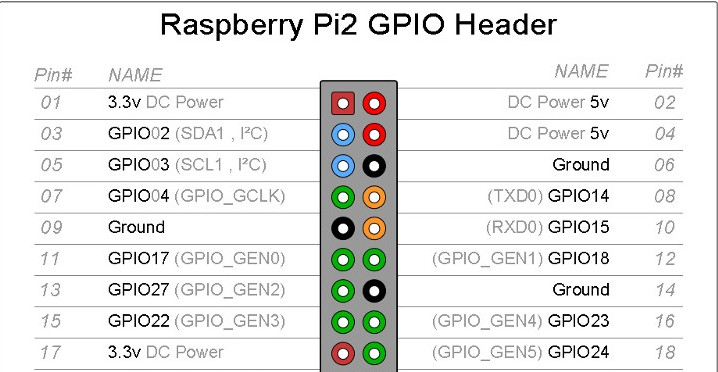
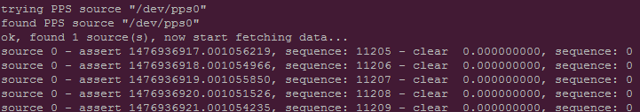
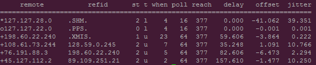

Installation and basic use of the Adafruit Ultimate GPS breakout on a Raspberry Pi 3. The installation starts with GPS over USB but, after running some tests, moves the GPS to UART. Mostly follows https://learn.adafruit.com/adafruit-ultimate-gps-on-the-raspberry-pi

Requirements
This guide will start with a basic Raspbian build, connected to a wired network. Follow the RPi Initial Setup Guide to get started. A Raspberry Pi 3 may be required for these procedures to work. A Raspberry Pi 2 can use this guide provided that it uses only the USB to TLL Serial cable connection. The UART connection method shown in this guide requires a pi 3.
Parts List
-
Raspberry Pi 3
-
16GB (or larger) class 10 MicroSD card
-
GPS breakout (Adafruit Ultimate GPS Breakout - 66 channel w/10 Hz updates - Version 3)
-
USB to TLL Serial cable (https://www.adafruit.com/products/954)
-
(Optional) External GPS antenna and SMA to u.FL adapter cable
GPS Breakout
The details of the pinouts, the logging capablities, and other features may be found by looking at the Adafruit references listed at the end of this document.
For basic usage, only four pins are used. These are: VIN, GND, TX, AND RX.
While the unit is attempting to get a fix, the red LED flashes once every second. Once the unit has a fix, it flashes once every 15 seconds.
For the optional antenna, push the adapter cable onto the board located u.FL connector. Then attach the antenna to the adapter cable and place the puck in a good reception area.
| Make certain to get the correct adapter cable as RP-SMA and SMA, while they look similar, are threaded opposite. |
GPS daemon (gpsd)
gpsd is a service daemon that monitors one or more GPSes or AIS receivers attached to a host computer through serial or USB ports, making all data on the location/course/velocity of the sensors available to be queried on TCP port 2947 of the host computer. See http://catb.org/gpsd/.
-
sudo apt-get install gpsd gpsd-clients python-gps -
Disable the gpsd systemd service.
-
sudo systemctl stop gpsd.socket -
sudo systemctl disable gpsd.socket
-
Now the gpsd needs to be started and pointed at either the USB device or the UART. Using USB to TLL or UART are covered in the next two sections. The commands are shown here for easy reference.
-
sudo killall gpsd -
USB to TLL use
sudo gpsd /dev/ttyUSB0 -F /var/run/gpsd.sock -
UART use
sudo gpsd /dev/ttyS0 -F /var/run/gpsd.sock-
Raspberry Pi 3:
sudo gpsd /dev/ttyS0 -F /var/run/gpsd.sock -
Raspberry Pi 2:
sudo gpsd /dev/ttyAMA0 -F /var/run/gpsd.sock
-
GPS using USB to TLL
The USB to TLL cable makes it quick and easy to test the GPS breakout with your pi.
Connections
Attach the colored wires from the USB to TLL cable to the GPS breakout thusly:
-
Red to VIN
-
Black to GND
-
Green to RX
-
White to TX

Insert the USB part of the cable into the pi.
Which USB
Determine which USB is being used by the GPS.
-
List the connected USB devices
ls /dev/ttyUSB*-
Typically you will only see the result of /dev/ttyUSB0
-
-
If needed you can list all USB devices with
sudo lsusb
gpsd and test
Point gpsd to the USB device.
-
sudo killall gpsd -
sudo gpsd /dev/ttyUSB0 -F /var/run/gpsd.sock -
Test with
cgps
| Before testing with cgps, it is good for the unit to have a location fix. |
GPS over UART
Connections
Connect wires from the GPS breakout to the pi, either directly or via a breadboard.
-
VIN to GPIO 5V pin 04
-
GND to GPIO GND pin 06
-
RX to GPIO TXD0 pin 08
-
TX to GPIO RXD0 pin 10
Optional
-
FIX to GPIO 17 pin 11 (to output fix signal, same as LED)
-
PPS to GPIO 27 pin 13 (to output timing PPS, for accurate clock)
-
EN to GPIO 22 pin 15 (to turn off GPS)

Edit /boot/cmdline.txt
-
sudo mv /boot/cmdline.txt /boot/cmdline.txt.orig -
sudo nano /boot/cmdline.txtadd the line:-
dwc_otg.lpm_enable=0 console=tty1 root=/dev/mmcblk0p2 rootfstype=ext4 elevator=deadline rootwait
-
Disable the serial getty service
| The Raspberry Pi 3 uses a different tty device name than the Raspberry Pi 1 or 2. Version 3 uses ttyS0 while versions 1 and 2 use AMA0. The next few sections use the device named ttyS0; if your are not using a Pi3, then change the device name as needed. |
-
sudo systemctl stop serial-getty@ttyS0.service -
sudo systemctl disable serial-getty@ttyS0.service
Force the CPU into a fixed frequency
| Not for Raspberry Pi 1 or 2. |
-
sudo nano /boot/config.txt-
At bottom add
enable_uart=1
-
Reboot
-
Reboot,
sudo reboot now
Connect gpsd to UART and test
-
sudo killall gpsd -
Raspberry Pi 3:
sudo gpsd /dev/ttyS0 -F /var/run/gpsd.sock -
Raspberry Pi 2:
sudo gpsd /dev/ttyAMA0 -F /var/run/gpsd.sock -
Test with
cgps
| Before testing with cgps, it is good for the unit to have a location fix. |
Starting at boot
| For UART connection only. |
-
sudo killall gpsd -
sudo nano /etc/default/gpsd
# change the options. START_DAEMON="true" DEVICES="/dev/ttyS0" GPSD_OPTIONS="-n" # -n : don't wait for client connects to poll GPS # : needed for proper time service polling
-
sudo systemctl enable gpsd.socket -
sudo systemctl start gpsd.socket -
sudo reboot now -
Test with cgps
Time Services
PPS
Pulse per second (PPS or 1PPS) is a signal that accurately repeats once per second. Precision clocks align a PPS signal to the UTC second and convert it to a useful time. Using PPS, the clock accuracy can be improved to about ±5 uSeconds (http://www.catb.org/gpsd/gpsd-time-service-howto.html#_1pps_quality_issues).
Raspbian has PPS support built-in but it does require some configuration.
-
sudo nano /boot/config.txt-
Add
dtoverlay=pps-gpio,gpiopin=27 -
Choose the gpiopin that you attached the PPS to
-
-
sudo nano /etc/modules-
Add
pps-gpio
-
-
sudo reboot now
Proper functioning may be checked with ppstest.
-
sudo apt-get install pps-tools -
Check with
lsmod | grep pps -
Now test with
sudo ppstest /dev/pps0 -
The output should be similar to that shown below

NTP with PPS support
The version of NTP supplied with the Raspberry Pi Linux does not support PPS. This means that a version with NTP support must be compiled and installed. Do not fear to tread through this section.
Make NTP with PPS support
This follows closely the advice given at http://www.satsignal.eu/ntp/Raspberry-Pi-NTP.html#compile-ntp.
-
Install some dependencies,
sudo apt-get install libcap-dev libssl-dev -
Create and change to a make directory
-
mkdir ~/Downloads/ntp -
cd ~/Downloads/ntp
-
-
Download the latest tarball
-
Copy the download link to the production version of NTP
-
Download,
wget download link -
For version 4.2.8p8,
wget http://www.eecis.udel.edu/~ntp/ntp_spool/ntp4/ntp-4.2/ntp-4.2.8p8.tar.gz
-
Untar and change directory
-
tar -xzvf ntp-4.2.8p8.tar.gz -
cd ntp-4.2.8p8
-
Now lets make and install:
-
./configure --enable-linuxcaps -
make -j5 -
sudo make install -
sudo service ntp stop -
sudo cp /usr/local/bin/ntp* /usr/bin/ -
sudo cp /usr/local/sbin/ntp* /usr/sbin/ -
sudo service ntp start -
sudo service ntp status
Configure NTP
-
sudo cp /etc/ntp.conf /etc/ntp.conf.orig -
sudo nano /etc/ntp.conf
# Add # Server from shared memory provided by gpsd # Not needed if you are Internet connected server 127.127.28.0 minpoll 4 prefer fudge 127.127.28.0 time1 0.000 refid SHM stratum 2 # Add # PPS type 22 clock for precise seconds server 127.127.22.0 minpoll 4 maxpoll 4 fudge 127.127.22.0 refid PPS # Change # pool.ntp.org maps to about 1000 low-stratum NTP servers. Your server will # pick a different set every time it starts up. Please consider joining the # pool: <http://www.pool.ntp.org/join.html> server 0.debian.pool.ntp.org iburst server 1.debian.pool.ntp.org iburst server 2.debian.pool.ntp.org iburst server 3.debian.pool.ntp.org iburst #pool us.pool.ntp.org iburst
| One of the servers must be marked as prefer. Above I show the gpsd provided server but if you use a LAN or Internet server instead, one of those must be preferred. |
Test the new NTP with PPS
-
sudo service ntp restart -
Print list of servers used and their status,
ntpq -p -n-
The character in the left margin indicates the fate of this peer.
-
space reject
-
x falsetick is discarded
-
. excess is discarded if not among the first ten peers
-
- outlyer is discarded as an outlyer
-
+ candidate is a survivor for the combining algorithm
-
# selected is a survivor, but not among the first six peers
-
* sys.peer is the system peer and is used for system time
-
o pps.peer is the system peer, however; system time is derived from PPS
-
Your preferred server should have an * by it and the PPS server should have an o. Additionally, the reach of available servers should eventually get to 377. The offset and the jitter from the PPS source should be very low.

Conclusion
Your pi now has a GPS defined location and extremely accurate time. Both of these are very useful and may be used in a variety of mobile, distance, and time based applications.